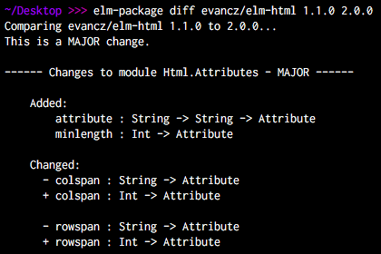

class: center, middle # Какие ваши доказательства? --- # Какие наши цели? > Глубоко ошибается тот, кто думает, что изделиями программистов являются программы, которые они пишут. Программист обязан создавать заслуживающие доверия решения и представлять их в форме _убедительных доводов_, а текст написанной программы является лишь сопроводительным материалом, к которому эти доказательства применимы. > > -- <cite>Эдсгер Вибе Дейкстра</cite> ### Довод - это доказательство --- # Единственный источник истины ```javascript function sum(a, b) { return parseInt(a, 10) + parseInt(b, 10) } ``` --- # Но истина мимолетна > Всё течёт, всё меняется > > -- <cite>Гераклит</cite> > Целое больше, чем сумма его частей > > -- <cite>Аристотель</cite> ```diff function sum(a, b) { - return parseInt(a, 10) + parseInt(b, 10) + return summator(prepareArgs(a, b)) } ``` **Изменчивость и непостояннство кода заложено в причине его появления.** --- # Не борьба, а наблюдение > Цветку нужно время, чтобы прорасти. Поэтому здесь не стоит напрягаться – лучше наблюдать. > > -- <cite>Йонге Мингьюр Ринпоче</cite> Иммутабельность: ```javascript var a = { a: 1 }; changeObj(a) // скрытое измение var a = { a: 1 }; a = changeObj(a) // наблюдаемое измение ``` FRP: ```javascript var getCurrentUnixTimeWithDelay = () => Time.now() + 5 getCurrentUnixTimeWithDelay() ... //скрытое изменение getCurrentUnixTimeWithDelay() var time = Time.toBehavior() var withDelay = time.map(now => now + 5) // наблюдаемое изменение withDelay.sample(Time.interval(1)).subscribe(x => console.log(x)) ``` --- # Все неявное станет явным VCS? ```diff function sum(a, b) { - return parseInt(a, 10) + parseInt(b, 10) + return summator(prepareArgs(a, b)) } ``` Немного занимательной лингвистики: **Изменение(Change) - происходит от "мена", "обмен"("exchange")** .center-text[  ] --- # Что такое хорошо и что такое плохо? Поведение: - желательное(`sum(2, 2)` вернет 4) - нежелательное(`sum(2, 2)` вернет не число) Его доказательства: - доказательства отсуствия некотрого нежелательного поведения - свойство безопастности системы(safety) - доказательства наличия некотрого желательного поведения - свойство живости системы(liveness) .center-text[  ``` !exists(!safe) ≡ all(liveness) ⇒ all(safe) ≡ all(liveness) ``` ] --- # Программа работает верно ```javascript describe('sum', () => { it('2 + 2 = 4', () => expect(sum(2, 2)).toBe(4)) }) ``` Сколько тестов будет достаточно? --- # Но это не точно... > Тестирование программы может весьма эффективно продемонстрировать наличие ошибок, но безнадежно неадекватно для демонстрации их отсутствия. > > -- <cite>Эдсгер Вибе Дейкстра</cite> #### Программа - это функция .center-text[ ``` f(x) = y ``` ] #### Тест - это проверка функции в конкретной точке .center-text[ ``` f(2) = 1 ``` ] Множество точек на которых определена программа обычно **близко к бесконечному** --- # Математики vs программисты #### Математики: - область определения, область значений - определение свойств(четность, моннотоность, итд) - вычисление значений в определенных точках(точки перегиба, экстремумы и просто некотрые случайно выбранные точки) #### Программисты: - вычисление значений в определенных точках .center-text[  ] --- # Пусть хотя бы ничего не ломает - сумма неотрицательных чисел больше каждого из слагаемых `a + b >= a && a + b >= b` - функция сортировки идемподентна `sort(sort(x)) ≡ sort(x)` - `reverse` обратна сама себе `reverse(reverse(str)) ≡ str` - сортировка не изменяет длину списка - `length(sort(x)) ≡ length(x)` - сумма двух чисел есть число - `typeof sum(a, b) ≡ 'number'` --- # Есть два способа... .left-column-50[ Доказать свойство статически при помощи Coq/Agda/TLA+/Lean Prover <img src="./img/math.jpg" height=300 width=300 /> ] .right-column-50[ Просто проверить это свойство на очень многих случайных точках ] --- # Генератор ```javascript function genPosNumber() { return Math.random() * 10000000000; } ``` --- # Свойство ```javascript function forall(argGenerators, propertyFn) { return function() { var generatedArgs = argGenerators.map(gen => gen()); return { success: propertyFn(...generatedArgs), args: generatedArgs }; } } ``` --- # Checker ```javascript function assert(property, tries = 100) { for (var i = 0; i < tries; i++) { var res = property(); if (!res.success) { throw new Error( 'Property hasnt held on arguments: ' + JSON.stringify(res.args, null, 2) ); } } } ``` --- # В тест! ```javascript it('forall a, b - a + b >= a && a + b >= b', () => { assert(forall( [genPosNumber, genPosNumber], function (a, b) { return a + b >= a && a + b >= b; } )) }) ``` --- # Property-based testing Шаги: - описываем свойство в виде проверки a.k.a инварианта a.k.a контракта - генерим много различных вариантов аргументов для некотрой функции(набора функций) - проверяем что на всех аргументах свойство соблюдается Библиотеки: - testcheck.js (порт clojure core.check) - jsverify --- # Вернемся к реальной жизни ```javascript function convertFrom(structFromBackend) { ... return structForFrontend; } ``` ```javascript function convertTo(structForFrontend) { ... return structFromBackend; } ``` ```javascript function isRevertable(structFromBackend) { var structForFrontend = convertFrom(structFromBackend); var structForBackend = convertTo(structForFrontend); expect(structFromBackend).toEqual(structForBackend); } ``` --- # Как создать семью? ```javascript import * as jsc from 'jsverify' var familyInfoGen = jsc.record({ type: jsc.elements(['espoused', 'single', 'common_law_marriage', undefined]), members: jsc.array( jsc.record({ role: jsc.elements(['sibling', 'child', 'parent', 'spouse']), fio: jsc.record({ firstname: jsc.oneof([jsc.string, jsc.undefined]), lastname: jsc.oneof([jsc.string, jsc.undefined]), middlename: jsc.oneof([jsc.string, jsc.undefined]) }), dependant: jsc.oneof([jsc.boolean, jsc.undefined]) }) ) }); ``` --- # Запрет на многоженство - динамические ограничения - Супруга может быть только одна - Если она есть, то `type === 'espoused'` - Если `type !== 'espoused'`, то ее быть не должно <a target="_blank" href="https://github.com/jsverify/jsverify#arbitrary-data">smap</a> — отображает элементы генерируемой последовательности согласно некоторой функции ```javascript var familyInfoGenFixed = familyInfoGen .smap(dropManySpouseOrFixMaritalStatus, identity); ``` --- # Умолчания ```diff ● convertFrom and convertTo properties › convertFrom -> convertTo save original shape ( {"type":"single","members":[{"role": "sibling", "fio": {}}]} ) Difference: - Expected + Received Object { "type":"single" "members": Array [ Object { "role": "sibling", "fio": Object {}, + "dependant": false } ] } ``` --- # Изменим проверку ```javascript import {Record, Literal as L, Union, Array, Boolean, String, Void} from 'runtypes' const FamilyStruct = Record({ type: Union(L('espoused'), L('single'), L('common_law_marriage'), Void), members: Array( Record({ role: Union(L('sibling'), L('child'), L('parent'), L('spouse')), fio: Record({ firstname: String.Or(Void), lastname: String.Or(Void), middlename: String.Or(Void) }), dependant: Boolean.Or(Void) }) ) }) const FamilyWithSingleSpouse = FamilyStruct.withConstraint( isSingleSpouse, {tag: 'FamilyStructWithSingleSpouse'} ) function isSameShape(structFromBackend) { var structForFrontend = convertFrom(structFromBackend); var structForBackend = convertTo(structForFrontend); expect(FamilyWithSingleSpouse.guard(structForBackend)).toBe(true); } ``` --- # Легким движением руки валидатор преврашается...В генератор! ```javascript import { addTypeToRegistry, makeJsverifyArbitrary } from 'runtypes-generate'; addTypeToRegistry( 'FamilyStructWithSingleSpouse', () => makeJsverifyArbitrary(type) .smap(dropManySpouseOrFixMaritalStatus, x => x) ); jsc.assert( jsc.forall(makeJsverifyArbitrary(FamilyWithSingleSpouse), isSameShape) ) ``` --- # Что-то это все напоминает... ```typescript type Family = { type: 'espoused' | 'single' | 'common_law_marriage' | undefined | null, members: Array<{ role: 'sibling' | 'child' | 'parent' | 'spouse', fio: { firstname: string | undefined | null, lastname: string | undefined | null middlename: string | undefined | null }, dependant: boolean | undefined | null }> } ``` ```typescript function convertFrom(structFromBackend: Family): ConvertedFamily {} function convertTo(structForFrontend: ConvertedFamily): Family {} ``` --- # Лирическое отступление: что такое статические типы Аннотации типов не просто *часть* языка - это *отдельный* язык. Может быть тьюринг полным: - TypeScript: https://github.com/Microsoft/TypeScript/issues/14833 - Java: https://arxiv.org/pdf/1605.05274.pdf Используя статическую типизацию, мы пишем код на двух языках: один что-то делает, а другой следит чтоб первый не делал что-то лишнее. Программирование с использованием вычислений на уровне системы типов называется `typelevel` программированием. --- # Пример: натуральные числа ```typescript interface Nat { prev?: any isZero: 'true' | 'false' } interface Positive { prev: Positive | _0 isZero: 'false' } type Succ<N extends Positive | _0> = { prev: N; isZero: 'false' } type _0 = { isZero: 'true' } type _1 = Succ<_0> type _2 = Succ<_1> ``` Note: данный "прием" называется [числа Черча](http://compsciclub.ru/media/slides/systemsoftypedlambdacalculi_2011_spring/2011_02_27_systemsoftypedlambdacalculi_20_CbAymeF.pdf) --- # Пример: список ограниченной длины ```typescript function create<A>(as: [A, A]): Vector<_2, A> function create<A>(as: [A]): Vector<_1, A> function create<N extends Nat, A>(as: Array<A>): Vector<N, A> { return new Vector<N, A>(as) } class Vector<N extends Nat, A> { static create = create readonly _N: N readonly _A: A constructor(public value: Array<A>) {} append<N2 extends Nat>(vector: Vector<N2, A>): Vector<Add<N, N2>, A> { return new Vector<Add<N, N2>, A>(this.value.concat(vector.value)) } zip<B>(vector: Vector<N, B>): Vector<N, [A, B]> { return new Vector<N, [A, B]>( this.value.map((a, i) => [a, vector.value[i]] as [A, B]) ) } } // v1 :: Vector<_1, number> const v1 = Vector.create([1]) // v2 :: Vector<_2, number> const v2 = Vector.create([2, 3]) // v2.zip(v1) // error console.log(v2.zip(v1.append(v1))) // Vector([[2,1],[3,1]]) ``` Link: https://github.com/gcanti/typelevel-ts --- # Но есть небольшая проблема... ```typescript [ts] Argument of type 'Vector<Succ<Succ<_0>>, number>' is not assignable to parameter of type 'Vector<Succ<Succ<Succ<_0>>>, number>'. Type 'Succ<Succ<_0>>' is not assignable to type 'Succ<Succ<Succ<_0>>>'. Types of property 'prev' are incompatible. Type 'Succ<_0>' is not assignable to type 'Succ<Succ<_0>>'. Types of property 'prev' are incompatible. Type '_0' is not assignable to type 'Succ<_0>'. Property 'prev' is missing in type '_0'. const v2: Vector<{ prev: Succ; isZero: "false"; }, number> ``` Программировать на аннотациях типов это примерно как программировать на регэкпспах. --- # Альтернатива? `Dependant` типы встроенные в компилятор: `Coq`, `Agda`, `Idris` *Типы ограниченные до значений* ```typescript function add<A extends Nat, B extends Nat>(a: A, b: B): Add<A, B> { return a + b; } ``` TEOREM PROVING IN DA HOUSE! `Refinement`(`Liquid`) типы встроенные в компилятор: ```typescript type nat = {v: number | 0 ≤ v} ``` Но пока не существуют в природе за рамками исследовательских проектов: - <a target="_blank" href="https://arxiv.org/pdf/1604.02480v1.pdf">Refinement Types for TypeScript</a> - <a target="_blank" href="https://www.youtube.com/watch?v=5lWIG3XQ2-A">LiquidHaskell</a> --- # Статика против динамики ```javascript function mean(list){ return divide(sum(list), length(list)) } ``` .center-text[ Доказательство что эта функция для любого списка чисел вернет число. ] .left-column-50[ В статике: ```typescript sum(list: number[]): number length(list: number): number div(a: number, b: number): number mean(list: number[]): number ``` Доказательство *по построению* a.k.a из внеш Верификация(от *verus* - верный) **Построение программы гарантирует некотрое свойство** ] .right-column-50[ В динамике: ```javascript jsc.forall( [jsc.array(jsc.number)], list => isNumber(mean(list)) ) ``` Доказательство *по результатам* a.k.a Валидация(от *value* - польза) **Результат выполнения программы обладает некотрым свойством** ] --- # Proof Cube .center-text[  ] --- # Пример .center-text[  ] --- # Стеклянная стена между мирами .left-column-50[ Статические(*по построению*): - опираются на структуру программы и ее исходный код - дают 100% гарантию - не требуют запуска программы и получения ее результатов - требуют полностью верного и согласованного построения всех промежуточных частей ] .right-column-50[ Динамические(*по результатам*): - опираются только на результат работы программы - дают только вероятностные гарантии - не требуют доступа к исходному коду программы - не важно как построена программа - важен только вход и выход ] .center-text[  ] --- # Вспомним пример ```typescript const FamilyStruct = Record({ type: Union(L('espoused'), L('single'), L('common_law_marriage'), Void), members: Array( Record({ role: Union(L('sibling'), L('child'), L('parent'), L('spouse')), fio: Record({ firstname: String.Or(Void), lastname: String.Or(Void), middlename: String.Or(Void) }), dependant: Boolean.Or(Void) }) ) }) type Family = { type: 'espoused' | 'single' | 'common_law_marriage' | undefined | null, members: Array<{ role: 'sibling' | 'child' | 'parent' | 'spouse', fio: { firstname: string | undefined | null, lastname: string | undefined | null middlename: string | undefined | null }, dependant: boolean | undefined | null }> } ``` --- # Разбиваем стену ```typescript import { Static } from 'runtypes' type Family = Static<typeof FamilyStruct> ``` Из одного описания данных(спецификации) можно получить: - динамический валидатор для данных из внешнего(нетипизированного) мира и сложных проверок не выразимых статически - генератор данных для проперти тестов - статический тип для проверки тайпчекером на этапе компиляции Динамическое доказательство vs статическое - теперь это просто вопрос тактики: .left-column-50[ **Статическое доказательство** *Внутренняя структура кода устойчива и не будет переписана в ближайшее время?* ] .right-column-50[ **Динамическое доказательство** *Код скорее всего будет вскоре много раз переписан(стадия прототипа)?* ] --- # Пример(все совпадения случайны!) Задача: новый модуль для вычисления среднего списка чисел TypeScript, --allowJs ```javascript function meanFn(list){ return divide(sum(list), length(list)) } ``` --- # Шаг 1. Прототип Модуль экспериментален и возможны бизнесс-правки/рефакторинги Стадия *активной разработки* `mean.js` ```typescript import { Contract, Array, Number } from 'runtypes'; const meanConstraint = ([list], result) => result >= min(list) && result <= max(list) export const MeanSpec = Contract(Array(Number), Number) .withConstraint(meanConstraint); export const mean = Mean.enforce(meanFn) ``` `mean.test.js` ```typescript import { makeJsverifyArbitrary } from 'runtypes-generate'; import { MeanSpec, mean } from './mean'; jsc.assert(jsc.forall( [makeJsverifyArbitrary(MeanSpec.reflect.argsTypes)], list => mean(list) )) ``` --- # Шаг 2. Стабильная структура Внутреняя структура модуля стабилизировалась Стадия *поддержки* `mean.js` -> `mean.ts` ```typescript function sum(list: number[]): number function length(list: number): number function div(a: number, b: number): number ``` В случае резкого изменения требований - к примеру надо считать не среднее, а медиану: `mean.ts` -> `mean.js` и возвращаемся на шаг 1 практически *без потерь* **Что еще можно полезного придумать?** --- # Генерация тестов из рантайма `mean.js` ```javascript export const mean = trace('module/mean', meanFn) ``` При завершении приложения или по специальному сигналу: ```javascript import { mean } from './mean.js' import convert from 'call-to-jasmine-test' mean.calls // массив вызовов за время работы приложения convert(mean.calls) // код тест кейсов jasmine /* it(1, () => expect(mean([1, 2, 3])).toEqual(2)) ... */ ``` --- # Генерация типов из рантайма ```javascript import { mean } from './mean.js'; import infer from 'runtypes-infer' mean.calls // массив вызовов за время работы приложения infer(mean.calls) // описание типов для runtypes /* Contract(Array(Number), Number) */ ``` [Automatic annotations](http://frenchy64.github.io/2016/08/07/automatic-annotations.html)  Только для clojure :( --- # Идеальный bottom-up pipeline 1) Написали код(прототип) ```javascript function mean(list){ return divide(sum(list), length(list)) } ``` 2) Протестировали немного руками - получили список вызовов ```javascript [[1, 2, 3], 2], ... ``` 3) Получили тесты из вызовов в рантайме - при необходимости дополнили/поправили ```javascript describe(() => it(() => expect(mean([1, 2, 3])).toEqual(2))) ``` --- # Идеальный bottom-up pipeline 4) Сгенерировали по ним спецификации типов ```javascript const MeanSpec = Contract(Array(Number), Number) ``` 5) По ним прогнали сгенеренные тесты - узнали о краевых случаях ```javascript jsc.assert(jsc.forall( [makeJsverifyArbitrary(MeanSpec.reflect.argsTypes)], list => mean(list) )) ``` 6) Когда код стал стабильным - переключаемся на статический режим и добавляем недостающие статические типы `mean.js` -> `mean.ts` ```typescript function sum(list: number[]): number function length(list: number): number function div(a: number, b: number): number ``` --- # Автоматическое доказательство корректности версионирования **Semantic Versioning** <img src="./img/semverMin.png" width="100%" /> Also: [ComVer](https://github.com/staltz/comver) --- # Автоматическое доказательство корректности версионирования Как доказать что изменение обратно-совместимо? .left-column-50[ **Динамически:** [Cracks](https://github.com/semantic-release/cracks) Прогон тестов предыдущей версии на новой <img src="./img/semanticRelease.png" width="100%" /> ] .right-column-50[ **Статически:** [Elm-package](https://github.com/elm-lang/elm-package) Сопоставление сигнатур функций предыдущей и новой версии  ] --- # Проблемы? `mean.ts` У нас были тесты: ```javascript it(() => expect(mean([1, 2, 3])).toBe(2)) it(() => expect(mean([])).toBe(0)) ``` Типы: ```typescript function mean(list: number[]): number ``` Но изменение пройдет незамеченным: ```diff function mean(list) { - return meanFn(list) + return medianFn(list) } ``` --- # Решение - синтез подходов 1) У нас есть описание типа: ```javascript const MeanSpec = Contract(Array(Number), Number) ``` 2) Проверяем что для любых входных значений результат не изменился ```javascript import { mean as prevMean, MeanSpec as prevSpec } from 'project-prev/mean'; import { mean as currMean, MeanSpec as currSpec } from 'project-curr/mean'; // сами спецификации не изменились("статический" подход) assert(isEqualSpec(prevSpec, currSpec)) jsc.assert( jsc.forall( [makeJsverifyArbitrary(prevSpec.reflect.argsTypes)] // результаты работы тоже не изменились("динамический" подход) list => prevMean(list) === currMean(list) ) ) ``` 3) PROFIT! --- # Refinement типы .left-column-50[ **Динамический**: ```typescript Number.withConstraint(v => 0 >= v) ``` *Как сгенерировать данные такого типа?* [Интересный пейпер с возможным решением](https://arxiv.org/pdf/1607.05443.pdf) ] .right-column-50[ **Статический**: ```typescript {v: number | 0 ≤ v} ``` *Как проверить это статически?* [Refinement Types for TypeScript](https://arxiv.org/pdf/1604.02480v1.pdf) ] --- # Решения? .center-text[ ] 1) [SMT (satisfiability modulo theories) solving](https://ru.wikipedia.org/wiki/%D0%97%D0%B0%D0%B4%D0%B0%D1%87%D0%B0_%D0%B2%D1%8B%D0%BF%D0%BE%D0%BB%D0%BD%D0%B8%D0%BC%D0%BE%D1%81%D1%82%D0%B8_%D1%84%D0%BE%D1%80%D0%BC%D1%83%D0%BB_%D0%B2_%D1%82%D0%B5%D0%BE%D1%80%D0%B8%D1%8F%D1%85) 2) Переход к `Dependant` типам Более общие но более неудобные для использования программистом .left-column-50[ **Динамический**: ```typescript Min(Number, 0) ``` ] .right-column-50[ **Статический**: ```typescript Min<Number, _0> ``` ] --- # ~~Type~~ Spec Driven Development  А теперь попробуем Top-Down подход --- # А что мы хотим получить? Общая спецификация: ```typescript type App = { { fio: { firstname?: string, lastname?: string } | !isEmpty v.lastname || !isEmpty v.firstname, balance: PositiveNumber }: { fio: FioString, amount: AmountString }; any: HtmlError } ``` Кейсы: ```javascript expect(app({ fio: { lastname: 'Иванов', firstname: 'Иван' } balance: 1000000 })).toEqual({ fio: 'Иван Иванов', amount: '1000000 Р' }) ... ``` --- # Как найти то - не знаю что [Hoogle for Haskell](https://wiki.haskell.org/Hoogle) [Rambo for Ramda](https://github.com/bahmutov/rambo) ```javascript const solve = require('rambo').solve const solution = solve([1, 2, 3, 4], [5, 6, 7, 8]) console.log(solution.name) // "R.map(R.add(4))" ``` --- # Синтез подходов 1) Разбиваем отображения типов на мельчайшие части каким то образом ```typescript { firstname?: string, lastname?: string } | !isEmpty v.lastname || !isEmpty v.firstname -> FioString PositiveNumber -> AmountString ... ``` 2) Ищем по соответсвиям спецификациям по проекту и подключенным либам ```typescript formatFio({ firstname?: string, lastname?: string }): FioString formatAmountRub(x: number): AmountString ``` 3) Собираем возможную реализацию 4) Проверяем по кейсам - если не ок, то на шаг 1 5) Прикручиваем machine learning 6) ??? 7) PROFIT --- # Тайные мечты менеджеров .center-text[  ] --- # План увольнения большинства программистов > *В правильно заданном вопросе содержится половина ответа* 1) Динамические доказательства - доработка `runtypes-generate`, `io-ts-generate` - генерация типов по предикату(Refinement типы) 2) Статические доказательства - Refinement в мейнстриме(TypeScript) - Соотношение [Refinement, Dependant типов и логики Хоара](https://cs.stackexchange.com/questions/54957/difference-between-dependent-type-refinement-type-and-hoare-logic) --- # План увольнения большинства программистов 3) Доламываем стену между динамическими и статическими свойствами: - [runtypes](https://github.com/pelotom/runtypes), [io-ts](https://github.com/gcanti/io-ts) - [Variadic kinds for TypeScript](https://github.com/Microsoft/TypeScript/issues/5453) 5) Bottom-Up - трейсинг вызовов сущностей(например для React компонентов) - генерация тестов по трейсингу - вывод типов по трейсингу 6) Top-Down - уход от кода в файлах - переход к коду в базе данных - поиск по спецификациям по проекту(БД) или NPM с валидацией по тестам - аналог Hoogle для TypeScript - AI --- # Истина не познается, а сделывается .center-text[  ]